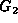
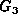
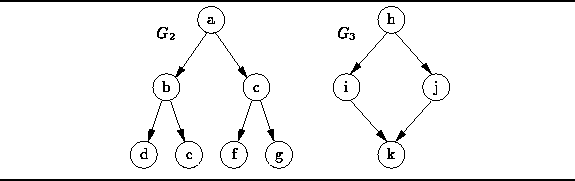

Data Structures and Algorithms
with Object-Oriented Design Patterns in Java
Data Structures and Algorithms
with Object-Oriented Design Patterns in Java
For certain applications it is convenient to deal with
graphs that contain no cycles.
For example, a tree (see Chapter  )
is a special kind of graph that contains no cycles.
)
is a special kind of graph that contains no cycles.
Definition (Directed Acyclic Graph (DAG))A directed, acyclic graph is a directed graph that contains no cycles.
Obviously, all trees are DAGs.
However, not all DAGs are trees.
For example consider the two directed, acyclic graphs,
 and , shown in Figure .
Clearly is a tree but is not.

Figure: Two directed, acyclic graphs.
 Copyright © 1998 by Bruno R. Preiss, P.Eng. All rights reserved.
Copyright © 1998 by Bruno R. Preiss, P.Eng. All rights reserved.